Integrating with Automation Controller
Now, let’s configure Automation Controller to use our custom content.
1: Create a Credential for Hub Container Registry
First, create a new credential in Automation Controller to allow it to pull the custom Execution Environment from Private Automation Hub.
-
Launch the Automation Controller web interface and login using the credentials from the RHDP login page.
-
From the navigation menu on the left, expand Automation Execution and expand Infrastructure and click on Credentials.
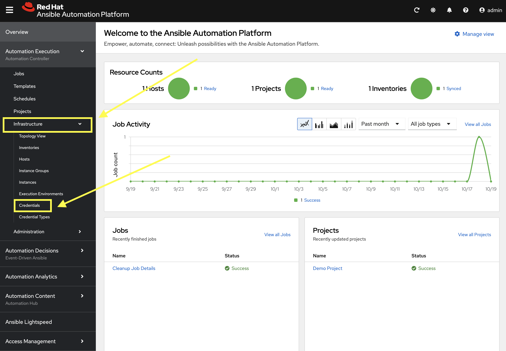
-
Click Create credential to add a new credential.
-
Enter the following details on the Create Credential page:
-
Name:
Hub -
Credential type:
Container Registry -
Authentication URL:
aap-aap.{openshift_cluster_ingress_domain} -
Username:
aap_controller_admin_user -
Password:
aap_controller_admin_password -
Verify SSL: Checked
-
-
Click Create credential to save the new credential.
2: Create a Credential for the Git Repository
Next, create a new credential to retrieve the source code from the Gitea repository.
-
From the RHDP login page in Automation Controller, click Create credential once again to add a new credential.
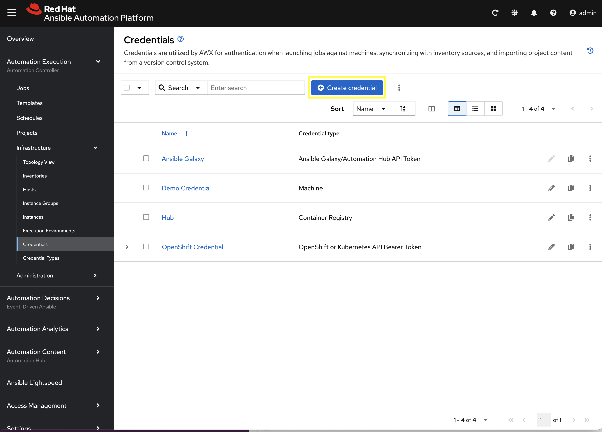
-
Enter the following details on the Create Credential page:
-
Name:
Gitea -
Credential type:
Source Control -
Username:
gitea_user -
Password:
gitea_password
-
-
Click Create credential to save the new credential.

3: Add the Execution Environment to Controller
Next, add the custom Execution Environment that we published previously to Automation Controller.
-
From the navigation menu on the left, expand Automation Execution and expand Infrastructure and click on Execution Environments.
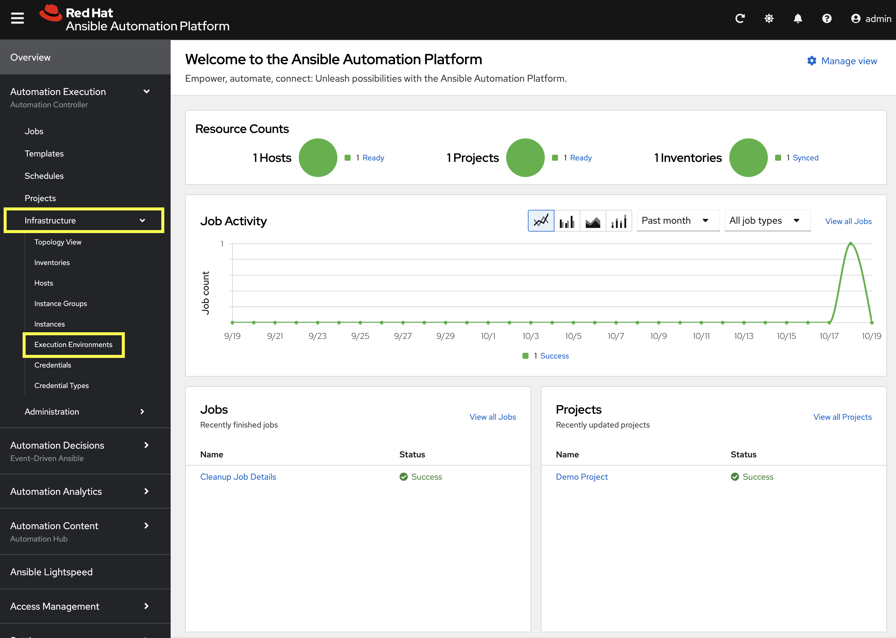
-
Click Create execution environment to add a new execution environment.

-
Enter the following details on the Create Execution Environment page:
-
Name:
My Custom PAH EE -
Image URL:
aap-aap.{openshift_cluster_ingress_domain}/my-pah-ee:1.1 -
Registry Credential: Select the
Hubcredential created previously.
-
-
Click Create execution environment to create the new EE.

4: Create a Project
Create a new Project in Automation Controller that points to your Git repository containing the playbook.
-
From the navigation menu on the left, expand Automation Execution and click on Projects.
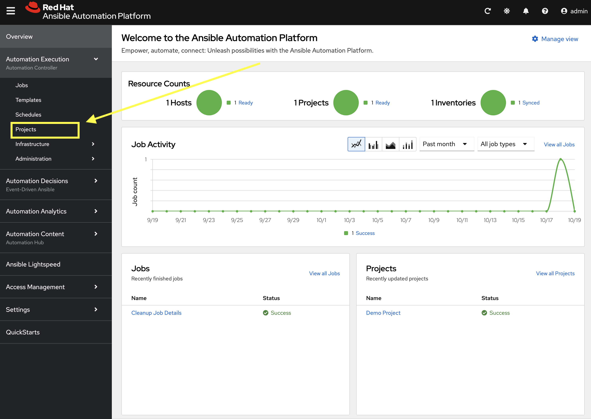
-
Click Create project to add a new project.
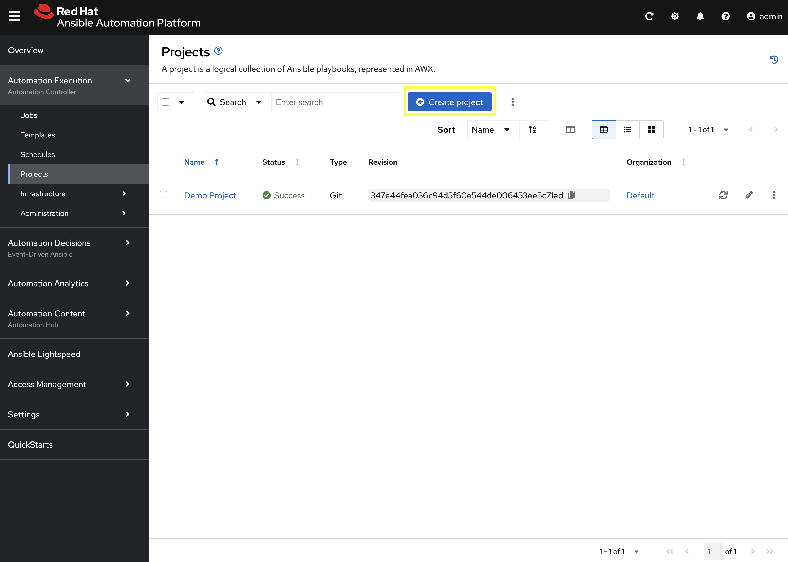
-
Enter the following details on the Create Project page with the real values :
-
Name:
Custom Content Test Project -
Organization:
Default -
Source Control Type:
Git -
Source control URL:
gitea_console_url/gitea_user/ansible_bootcamp_my_collection.git -
Source code credential: Select the
Giteacredential created previously.
-
-
Click Create project to create the new Project.
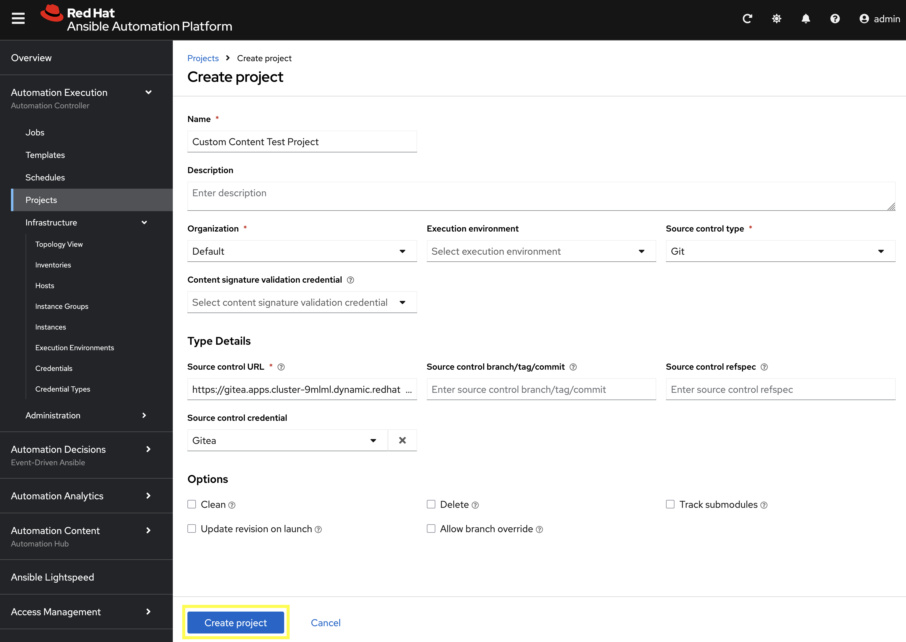
Confirm that the project has been synced successfully by looking Success underneath Last job status.
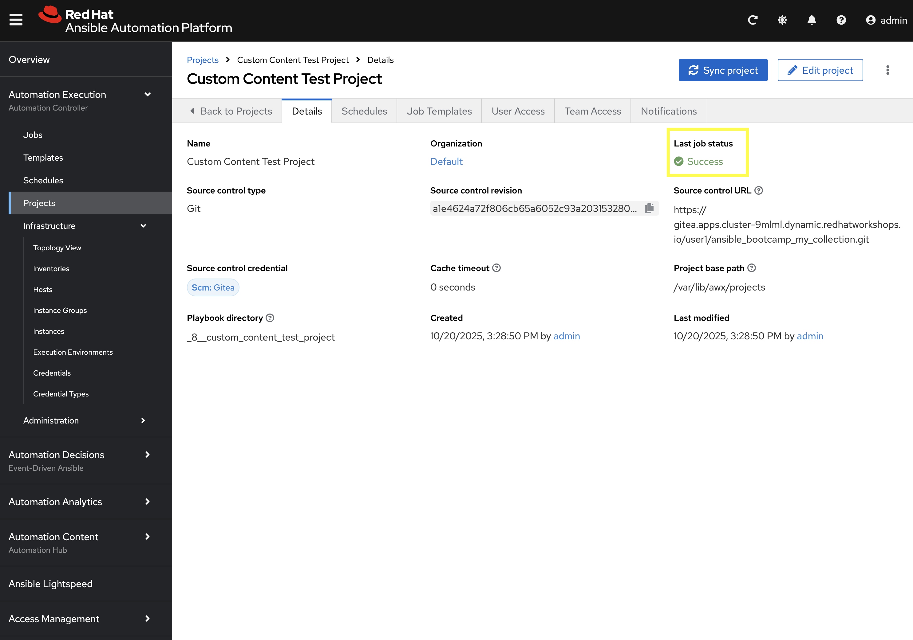
5: Create a Job Template
With the Execution Environment and Project created, the final step is to create a Job Template that uses both components.
-
From the navigation menu on the left, expand Automation Execution and click on Templates.
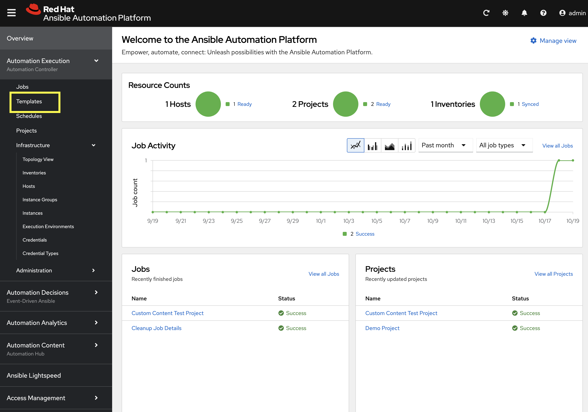
-
Click the Create template dropdown and select Create job template.
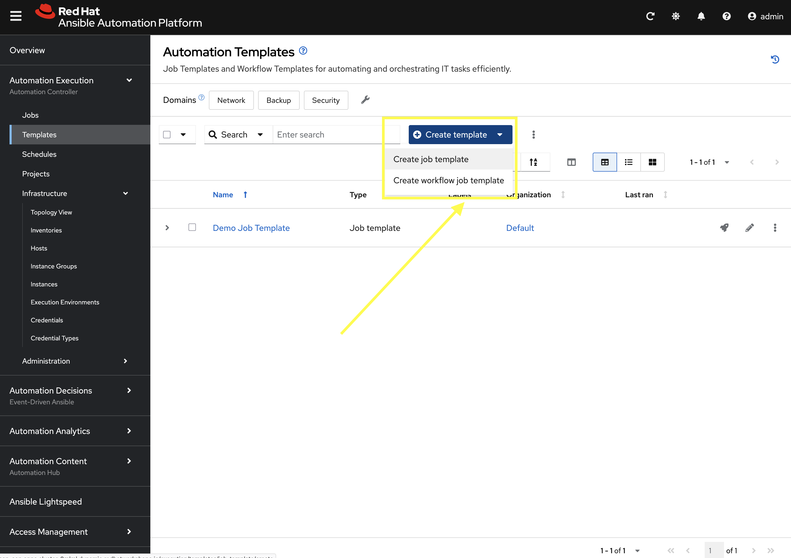
-
Enter the following details on the Create job template page:
-
Name:
Test Custom Cowsay Filter -
Inventory:
Demo Inventory -
Project:
Custom Content Test Project -
Playbook:
playbooks/test_pah_ee.yml -
Execution Environment:
My Custom PAH EE
-
-
Click Create job template to create the new Job Template.
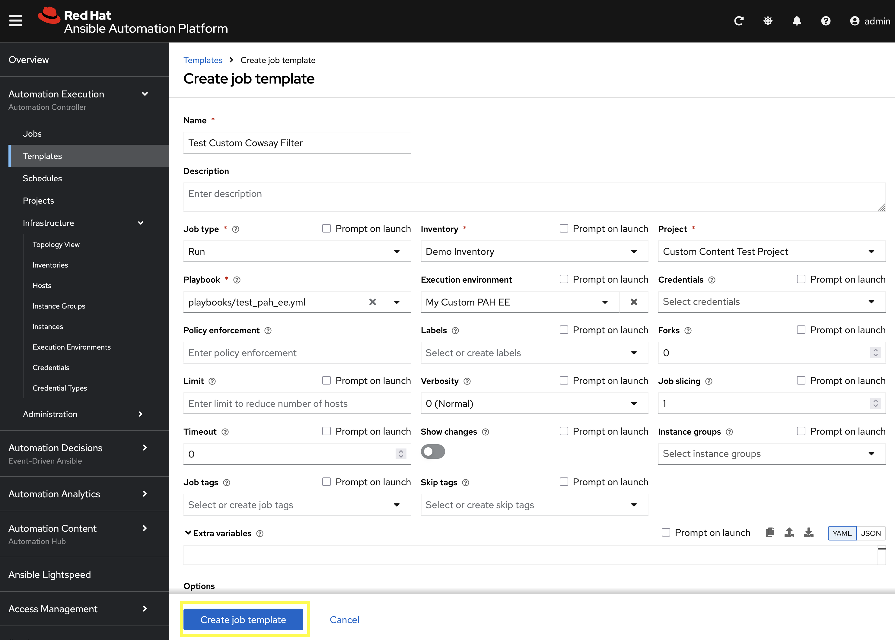
6: Launch the Job Template and Verify
Now that the Job Template has been created, launch the Test Custom Cowsay Filter and verify that the custom filter is working as expected.
-
From the Test Custom Cowsay Filter Job Template details page, click the Launch template button on the upper right hand side.
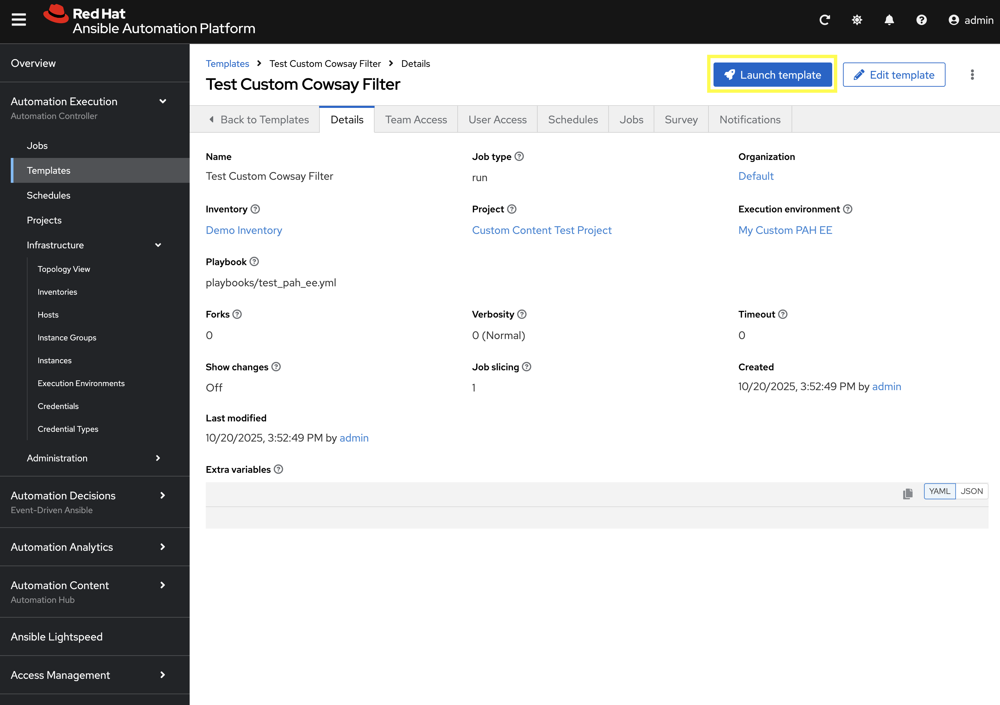
Monitor the status of the job until it completes successfully displaying the output of the cowsay filter similar to the following:
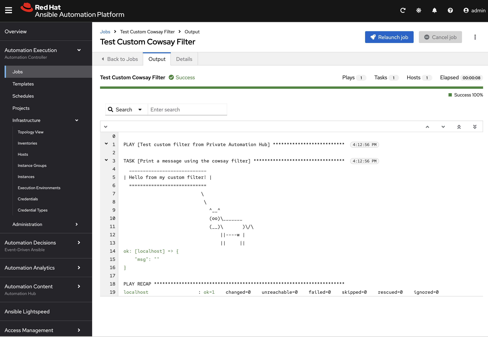
7: Sync collections
The final exercise in this lab is to customize the content sources from Remote Automation Hub / Ansible Galaxy instances into Private Automation Hub. To support lab exercises later in this bootcamp, we will specify additional collections to be synchronized.
7.1: Update Community Remote
-
From the navigation menu on the left, expand Automation Content and click on Remotes.
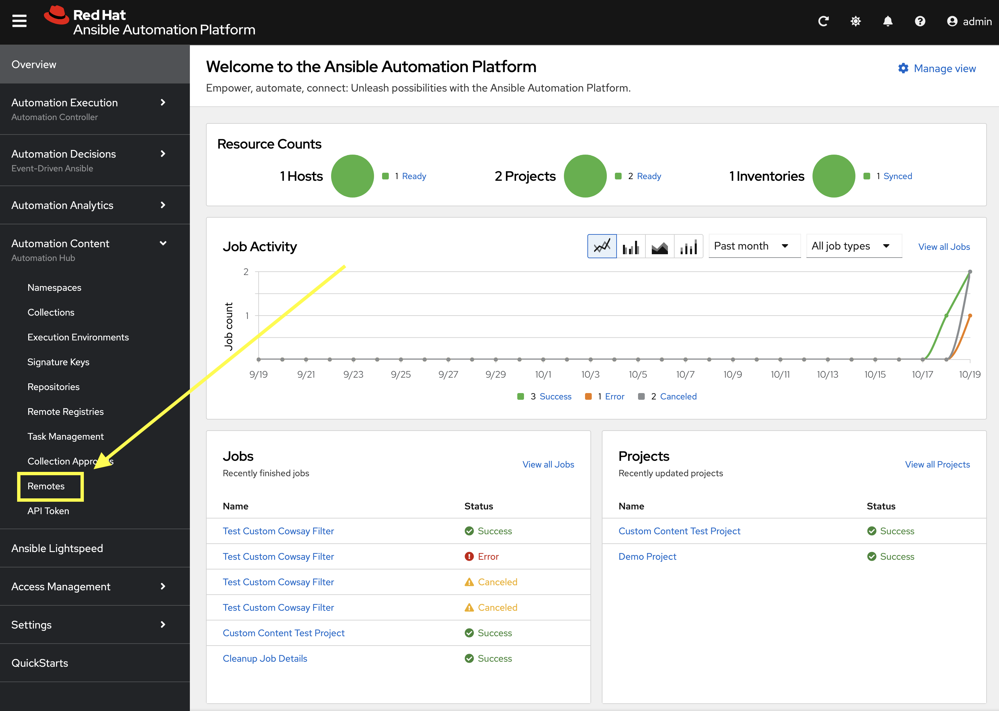
-
Click the pencil icon to edit the
communityremote.
-
Paste the following into the Requirements file field to specify additional collections to be synced:
collections: - name: containers.podman - name: community.postgresql -
Click Save remote to apply the changes.
7.2: Add Validated Remote
Create a new remote for the validated collections repository. A token for Red Hat Automation Hub is required to access this repository.
-
Navigate to Red Hat Automation Hub and click here to generate a token
-
Click Load token to generate a new token and copy it to your clipboard.
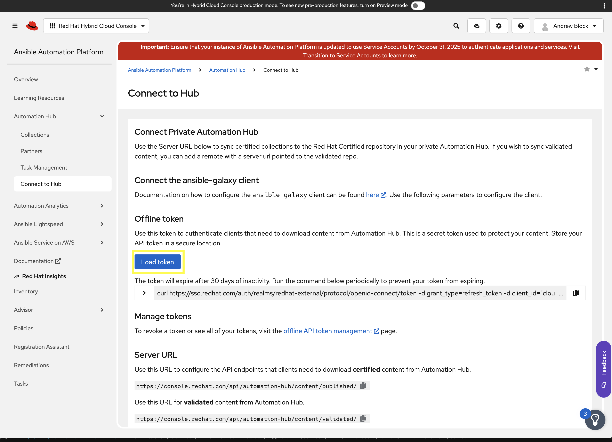
-
From the Remotes page in Private Automation Hub, click Create remote.

-
Enter the following details on the Create remote page:
-
Name:
validated -
Server URL:
https://console.redhat.com/api/automation-hub/content/validated/ -
SSO URL:
https://sso.redhat.com/auth/realms/redhat-external/protocol/openid-connect/token -
Token:
<The token copied previously from Red Hat Automation Hub>
-
-
Click Create remote to create the new Remote.

Now that the validated remote has been created, update the validated repository to reference the newly created remote.
-
From the navigation menu on the left, expand Automation Content and click on Repositories.
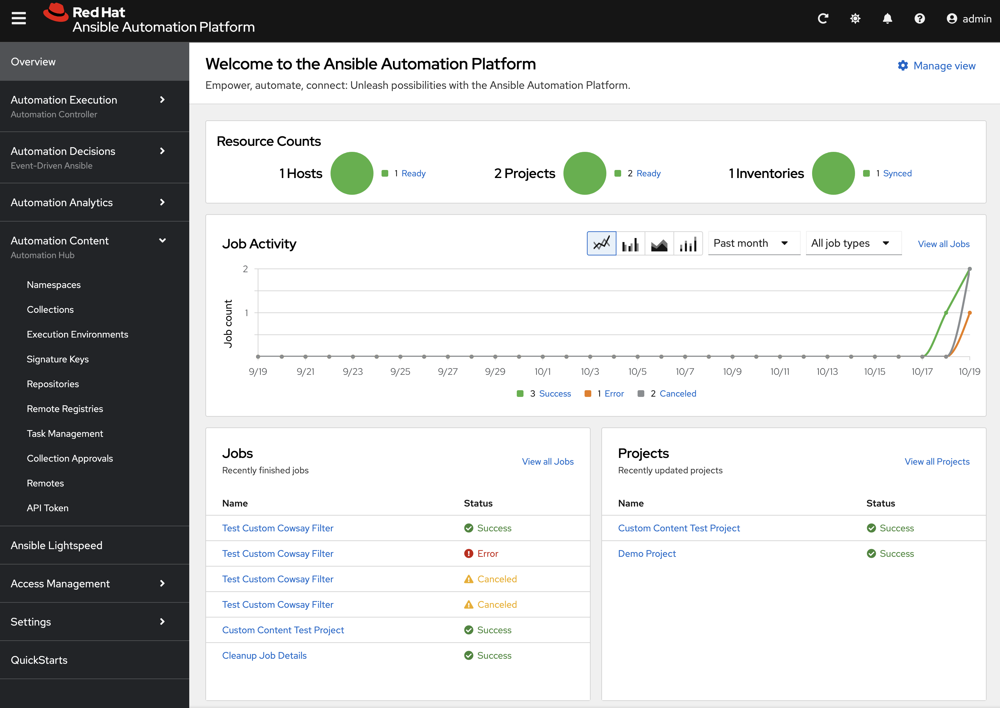
-
Edit the validated repository by selecting the pencil icon

-
Update the
Remotefield by selectingvalidatedfrom the drop down. -
Click Save repository to update the repository.

7.3: Update RH-Certified Remote
Now that you have a Red Hat Automation Hub token, update the rh-certified remote to use this value as well.
-
From the Remotes page in Private Automation Hub, edit the
rh-certifiedremote by selecting the pencil icon.
-
Update the Token field by pasting the token copied previously from Red Hat Automation Hub.
-
Click Save remote to apply the changes.
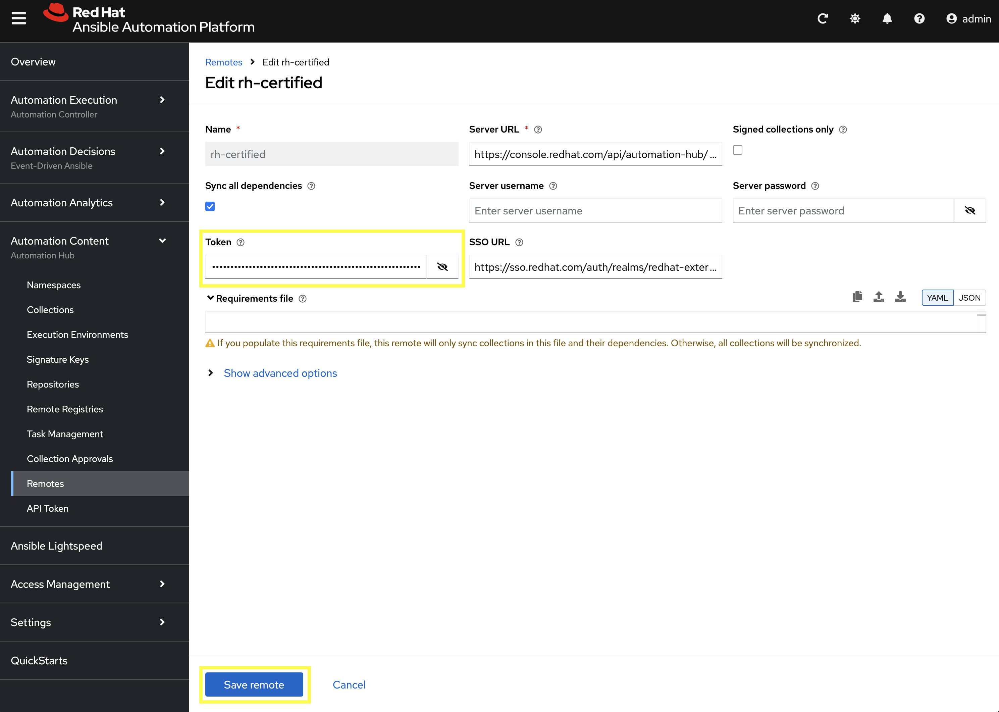
7.4: Sync Repositories
Finally, synchronize the rh-certified, validated, and community repositories to pull in the new collections within the Repositories page.
-
From the navigation menu on the left, expand Automation Content and click on Repositories.
-
Next to the
communityrepository, click the kebab menu (three vertical dots) on the right hand side of the entry and select Sync repository.
-
Repeat the above steps to sync the
rh-certifiedandvalidatedrepositories as well.
| Syncing the rh-certified collections will take some time. You can monitor the progress, but it will not impact the next set of labs in this bootcamp. |